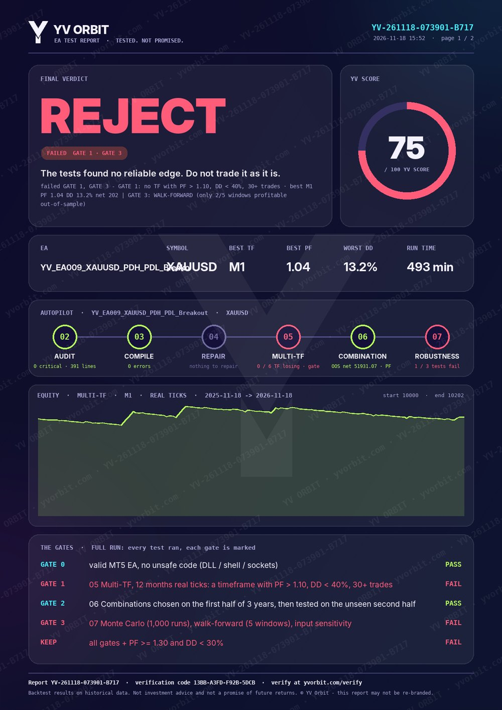

00 / Autopilot
YV Orbit Tower
Load one EA and press start. The Tower runs every station from 02 to 07 on its own, records each gate, and always finishes the full run before it gives a verdict, so a failed gate never hides the rest of the evidence.
- Gate 1A timeframe with profit factor above 1.10 and drawdown under 40%
- Gate 2Input sets chosen on the first part of the history still profitable on the unseen part (PF above 1.00)
- Gate 3Monte Carlo, walk-forward and input sensitivity
- KeepAll gates passed, PF 1.30 or more and drawdown under 30%
Every report carries a report ID, a verification code and the YV Orbit watermark. One EA per run. Windows app, in private use.

Real report, page 1 of 2: EA 009 run through the Tower on 18 Nov 2026. Verdict REJECT on the Tower's stricter gates (only 2 of 5 walk-forward windows profitable), although an earlier Robustness Lab run marked it KEEP. Both results stay on the record.
 (opens full-size image)
(opens full-size image)